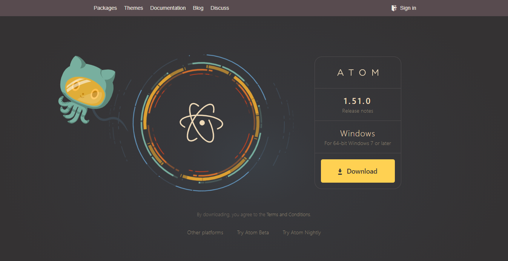
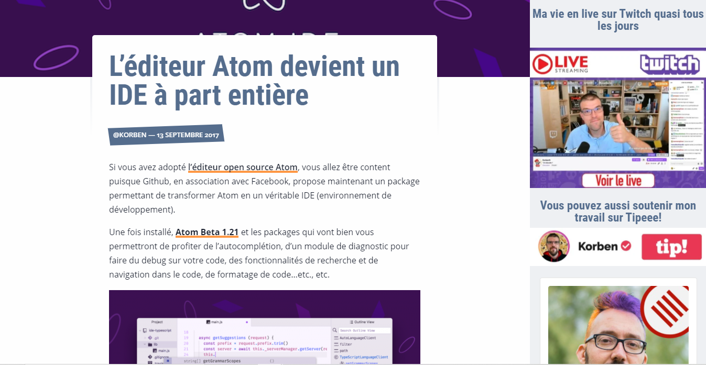
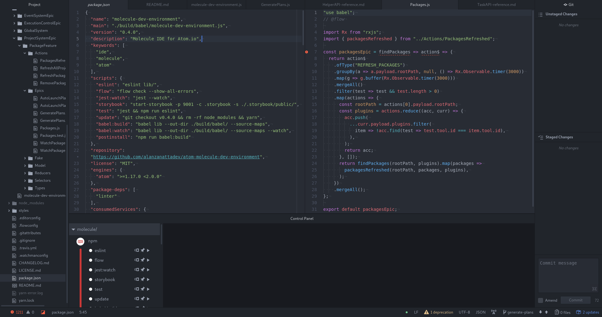
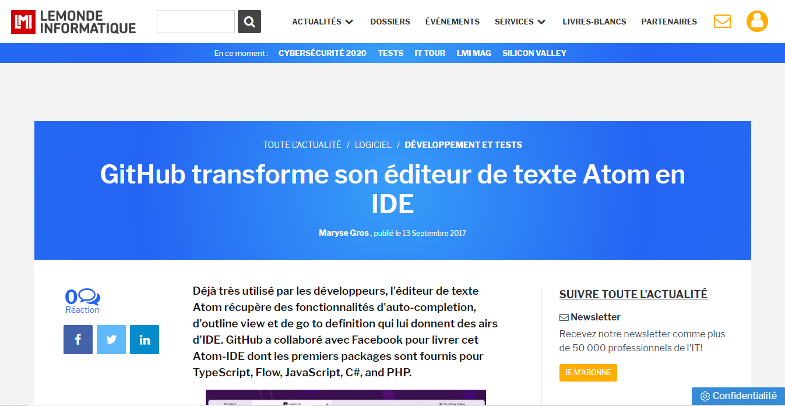

Atom
Notepad ++
Viual studio code
Atom est un éditeur de texte libre pour macOS, GNU/Linux et Windows développé par GitHub. Il supporte des plug-ins écrits en Node.js et implémente Git Control.



